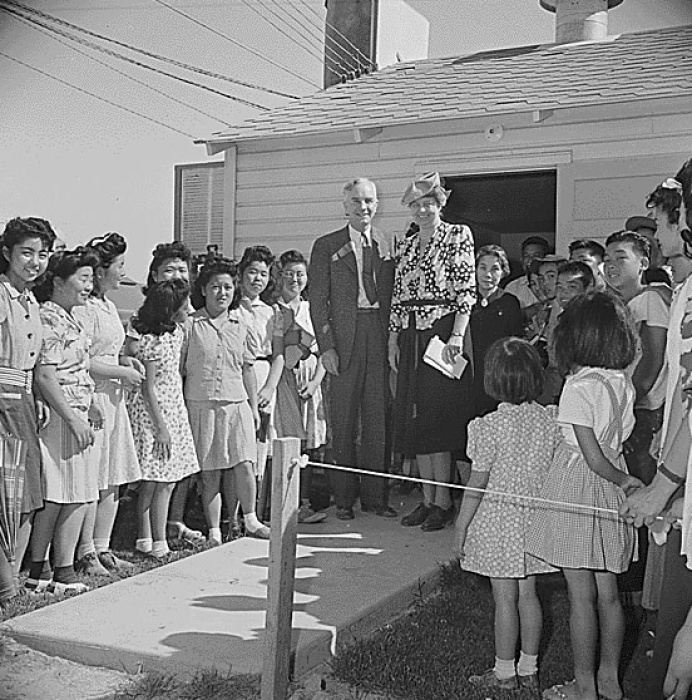

Poems of Incarceration

Visit by Eleanor Roosevelt, April 23, 1943, Gila River concentration camp, Arizona.
Courtesy of the National Archives and Records Administration (Ctrl.#: NWDNS-210-G-B469; NARA ARC#: 537079; WRA; Photographer Francis Stewart)
Source: Densho Digital Archives
The poems pressented on this site were written by children incarcerated in the Gila River concentration camp during World War II, as part of the Japanese-American Incarceration.
The poems were found on a web page authored by Sorelle Friedler during her undergraduate studies at Swarthmore College. They are from a booklet edited by Ferning Downing.
The original web page can be viewed here.